编者注：本文包含优质v2Ray机场（极游）推荐，截至2020.02已稳定运营一年有余；部分高级套餐已增加AlibabaIPLC（内网专线）节点，速度更快更稳定！
极游注册地址
| 极游 | 2020年 | 1月11日 | 更新 |
|---|---|---|---|
| 机场 | 注册地址 | 备用地址 | 特点 |
| 极游-Cloud | Jiyou.cloud | Jiyou.word | 油管4k秒开/v2Ray黑科技 |
*注册时，请自行更换网站语言，其中邮箱务必填写正确，手机号码（务必）随意填写；
*如网页出现Critical Error提示，可稍后尝试注册/登录，一般会很快恢复正常；
*如网页出现无法访问此网站提示，可尝试关闭代理再访问即可；
点此跳转 官方运营日志 处；
极游简介以及流量套餐
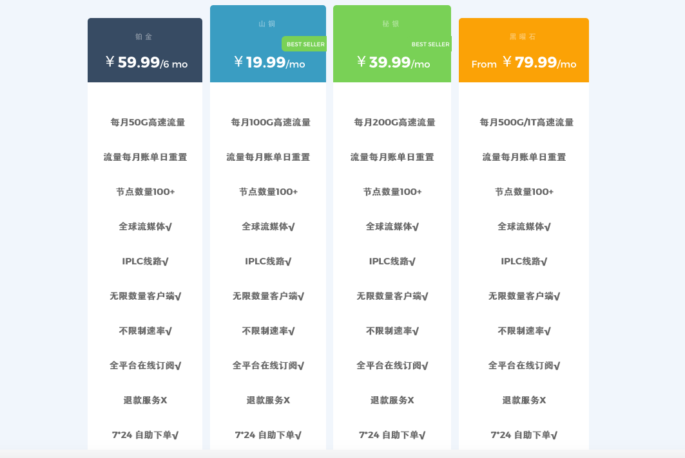
| 项目1 | 项目2 | 项目3 | 项目4 | 项目5 |
|---|---|---|---|---|
| 套餐 | 线路 | 关键词 | 每月可用流量 | 价格 |
| 铂金/Platinum | BGP+少量IPLC | 优价优质 | 50GB/月 | ￥59.99/半年 |
| 山铜/Orichalcum | BGP+少量IPLC | 优价优质 | 100GB/月 | ￥19.99/月 |
| 秘银/Mithril | BGP+少量IPLC | 优价优质 | 200GB/月 | ￥39.99/月 |
| 黑曜石 | BGP+少量IPLC | 优价优质 | 500GB/月 | ￥79.99/月 |
| 游戏套餐 | IPLC | 稳定优质 | 10GB/月 | ￥5元/月 |
*MOON 套餐是个老套餐，折合后，实属5元/月机场系列；但因为使用v2Ray协议的关系，同样拥有较好的稳定性，极小的被墙概率，大多数情况下线路速度和线路可用率还是OK的，刷YouTube/Twitter/Instagram等不在话下，4K视频非上网高峰期勉强；另外，值得注意的是自2020年起，MOON套餐下也新增了一条IPLC专线，稳稳的幸福。
由于价格优势，或许MOON会很快售罄下架，只能静候下次不定期补货或不再上架（杨过：平平无奇。
*秘银/铂金/山铜/黑曜石均属同组节点的不同等级 仅流量不同，BGP中转节点目前保有量在80个节点左右，98% 的可用率，更多数据可参考近期测速；
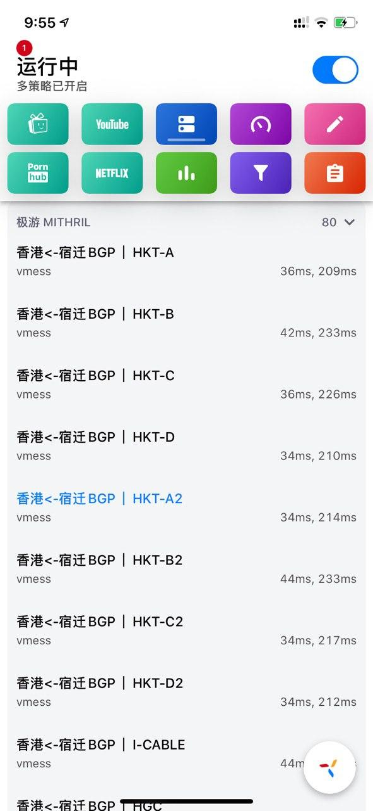
*目前较为实惠的应该只剩下铂金半年付套餐；
*铂金/山铜/秘银/黑曜石节点一致，定价与流量区别；
*极游套餐内容最后于 03.24.2020 更新；
流量套餐及节点食用说明
良心v2Ray加速服务，4K油管秒开
1.中国大陆BGP中继网络
2.铂金及以上套餐+少量IPLC节点与100+BGP节点
3.[u]20+节点支持[/u]
4.香港/新加坡/台湾/日本/美国等边缘网络
5.无限客户端同时在线
6.Netflix/TVB/Hulu/HBO 访问解锁
7.高达 1Gbps 速率可用
8.全平台 在线订阅模式
极游优惠码
优惠码：iwannapaymore，-10%的循环优惠，目前可用；优惠码: HappyBirthday， 八折优惠2020年2月24日0点前有效，购买套餐时填写即可。
黑科技多平台支持
极游go-V2ray机场评测
v2Ray黑科技加持：在数次重大节日会议期间，v2Ray机场均保持着大规模不被墙的记录，在协议加密传输方面亦可以说是个奇迹了。
目前看来，Jiyou是TG上极少数靠谱又实惠的V2ray商家。（如需购买，推荐 MOONSAND SUNMITHRIL ORICHALCUM ALIBABA套餐任意选一；
多平台支持 Android Mac iOS（Shadowrocket/Quantumult/X等） Windows。（我仔细查了下v2rayNG Android客户端内置的推荐模块也有关于Jiyou的推荐，可以说相当良心了。）。
一些额外说明
*套餐相关：线路或套餐详情请参阅极游官方说明页面，以实际说明为准；
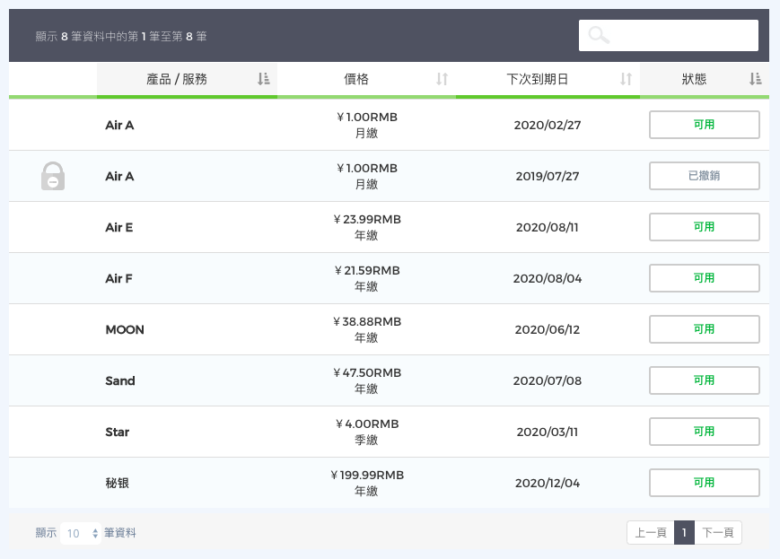
套餐定价从最初的1元/月起，Air A-F，Sand，Star，MOON..（老用户现在还可续费使用，骨灰级套餐），现几经升级迭代到现在已到了￥19.99/月起，线路优化升级，稳定性亦更加优秀；关于SLA保证，据我所知，似乎没有任何一家机场，能真正做到SLA及速度保证，如果能（做到保证）也不会明确写出：在大部分时间稳定的情况下，我们默认允许一定程度的瑕疵；
各个机场详细介绍/突出特点，可看后文以及对应机场文章。
| 项目1 | 项目2 | 项目3 | 项目4 | 项目5 | 项目6 | 项目7 |
|---|---|---|---|---|---|---|
| 机场 | 套餐 | 对应流量 | 线路 | 关键词 | 协议 | 折扣 |
| N3RO | 18.8元/月起 | 28GB | 大部分IPLC+中转 | 老牌稳定/优价优质 | SS/SSR | 95% |
| 卡车家族 | 12元/月起 | 80GB | 加密隧道/中转 | 学生党/中规中矩 | SSR | 90% |
1.N3RO月付折后17.86元起，约合188GB可用中继(低倍率)流量或24GB可用专线流量。年付再省15%，稳定办公+流媒体（轻度用户）两不误。
2.N3RO除了享毒奶专属的折扣优惠外，季付/半年付/年付额外可享 5%/10%/15%的优惠（注：具体执行折扣以当时实际为准，若有变更，不另行通知；
3.N3RO/卡车家族/机场均支持热门流媒体解锁；
*套餐概览 最后于 03.05.2020 更新。
via 毒奶的机场推荐清单 ，点击查看适合你的机场推荐；
以上。
10.01.2019 更新
0.近期机场主已恢复了维护；（09.30.2019）
1.关于此贴仅为教程贴，也是出于个人对极游的喜欢；
2.本站 并不提供极游任何相关服务售后；
3.关注本站 Telegram 主理人频道，了解及时资讯不失联；
以上。
官方运营日志
2020.03.26 更新
2020.03.15 更新
*希望各位不要造谣，只是关闭讨论 via jiyou Channel;
主理人说：
极游TG群组暂关闭讨论；或出于安全考量，频道及群组聊天记录已做清理；
已购套餐等服务依常运行；
套餐内节点丰富；如节点出现断连，请等待修复并更换可用节点使用；
小鬼作祟，很是恼人；
What a hard year...
2020.03.08 更新
持有MOON/Star/Sand/Air 系列套餐的骨灰级用户注意 ，仅air/moon/star/sand系列可退款到余额，具体步骤为，产品—>升级降级—>退款选项—>确定，退款为按照剩余天数的原价退款，不是0.01。
一年多来，极游秉承着超高性价比为大家带来辣条价的高速稳定服务。如今，由于种种原因，极游无法一如既往为大家带来 低价&稳定&高速&超大流量 的部分产品，特对部分产品/服务开启 退款到余额 通道，同时，也会在最后为一直支持极游的大家提供特别优惠码
允许退款到余额产品：
- Air A系列
- Air B系列
- Air C系列
- Air D系列
- Air E系列
- Air F系列
- Air G系列
- Moon 系列
- Sand 系列
*以上系列产品用户可在产品管理详情选择降级为 退款到余额服务；
- 退款通道：个人中心-产品-所需退款产品详情页-操作-升级降级-退款到余额
- 所获余额可选择新购在售套餐或续费在售套餐
- 若选择继续持有我们也会尽可能的为您提供基础服务
- 在售套餐选用优秀的CN2 GIA&IPLC&IEPL 等高级线路为大家提供服务，测速图如上，线路仍在不断优化新增中
*若选择退款到余额可选择使用优惠码 JIYOU_SPecial 专属折扣；
*退款所剩余额可在极游网站-通知处查看；
近期测速
2020.03.22 更新
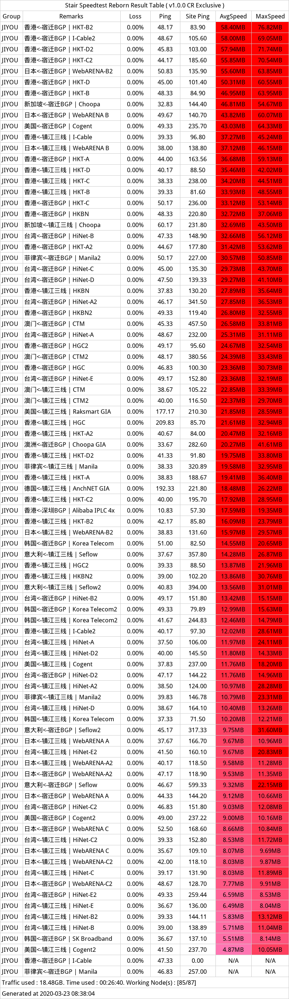
via Jiyou-铂金套餐 早间测速；3.15 风波之后第一次早间测速，一如既往的好颜色；
2020.03.13 更新
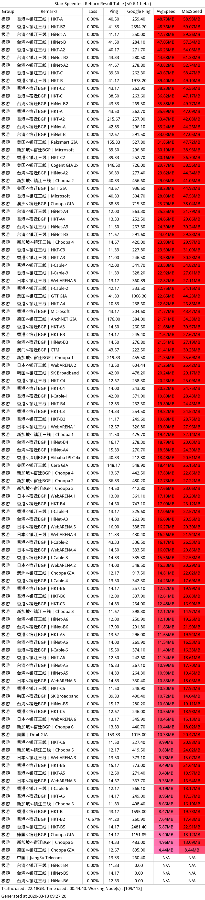
via Jiyou-铂金套餐 早间测速；随着老用户们从 Air（A-G）等骨灰系列套餐升级迁移至新套餐，节点也已增至113个；引用群友反馈：Huak Riza “节点太多了，选择困难症爆发！以前十几个节点，现在一二百个节点”...
按理说，现在节点是足够富足且盈余的。
2020.03.08 更新
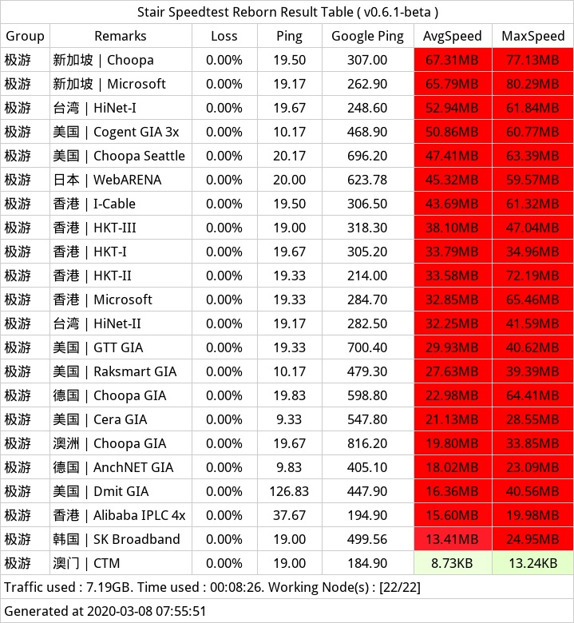
via Jiyou-铂金套餐 早间测速；
2020.03.01 更新
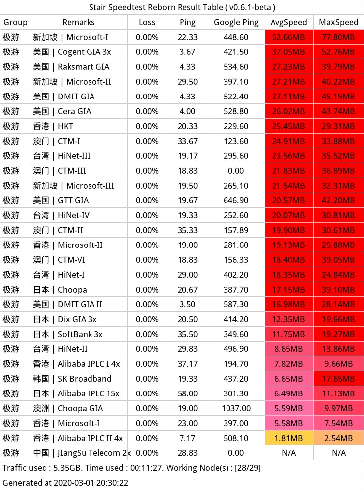
via Jiyou-铂金套餐 晚间测速（晚高峰）；
2020.02.26 更新
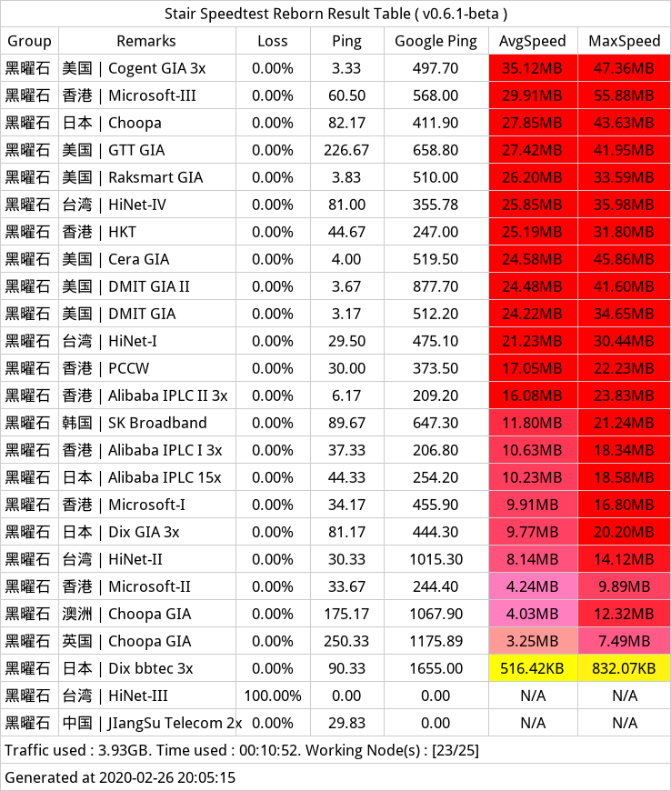
via Jiyou-黑曜石 套餐，不愧是亲妈生的...
2020.02.19 更新
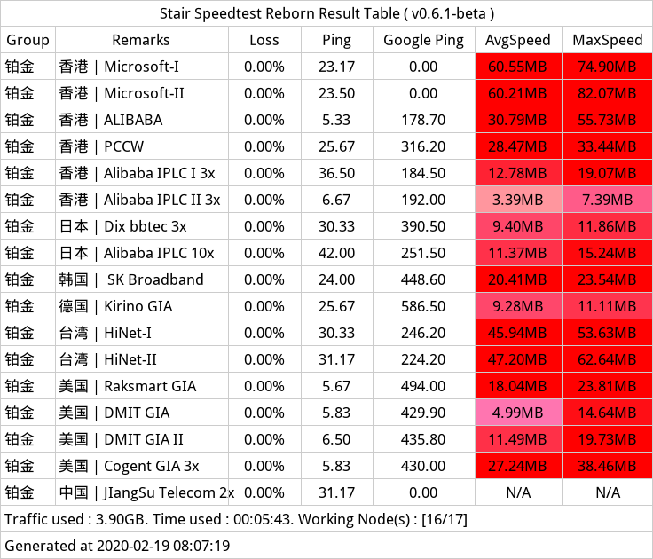
via Jiyou-铂金 套餐
2020.02.18 更新
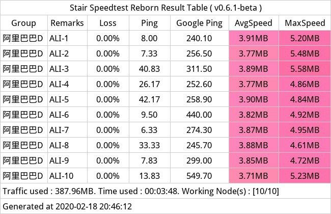
via Jiyou-Alibaba D 套餐，稳定限速30兆。
2020.02.16 更新
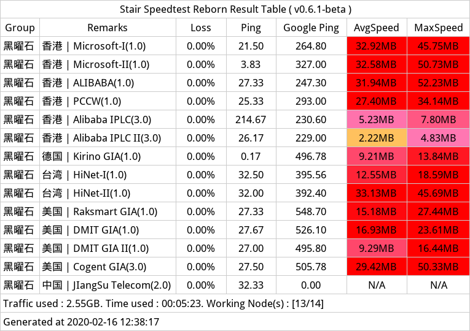
via Jiyou-黑曜石 套餐
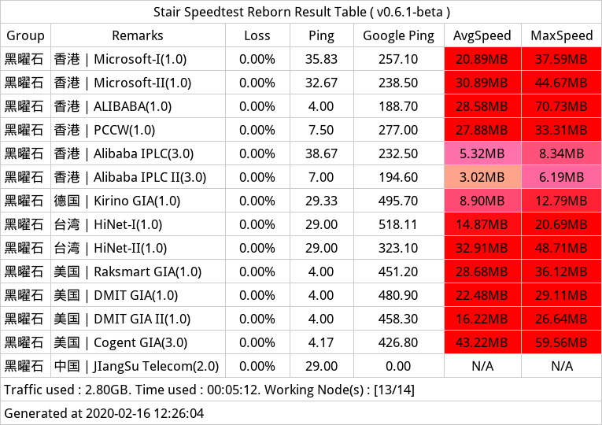
via Jiyou-黑曜石 套餐
2020.02.13 更新
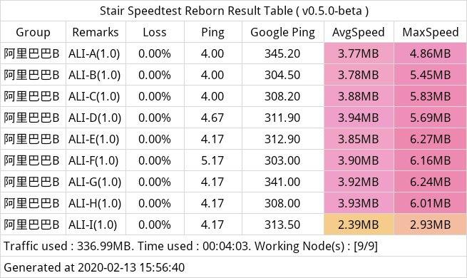
via Jiyou-Alibaba.B 套餐，节点限速30兆（折合30/8=3.75Mb/s），看4K？绰绰有余。
2020.02.08 更新
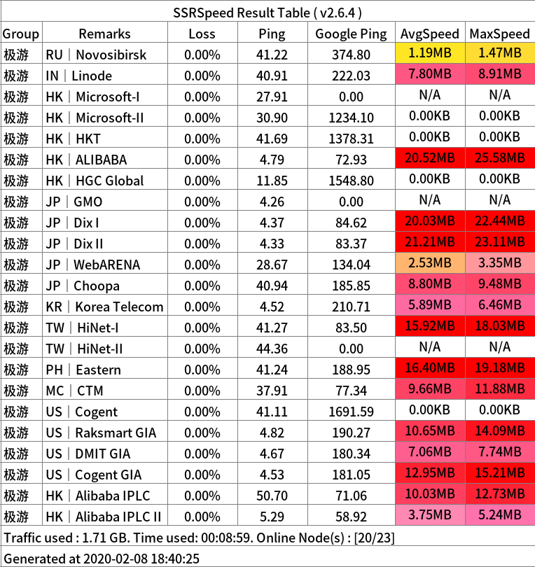
via Jiyou-Mithril/秘银 套餐，晚高峰看4K轻轻松，有几个节点待修复；
2020.01.16 更新
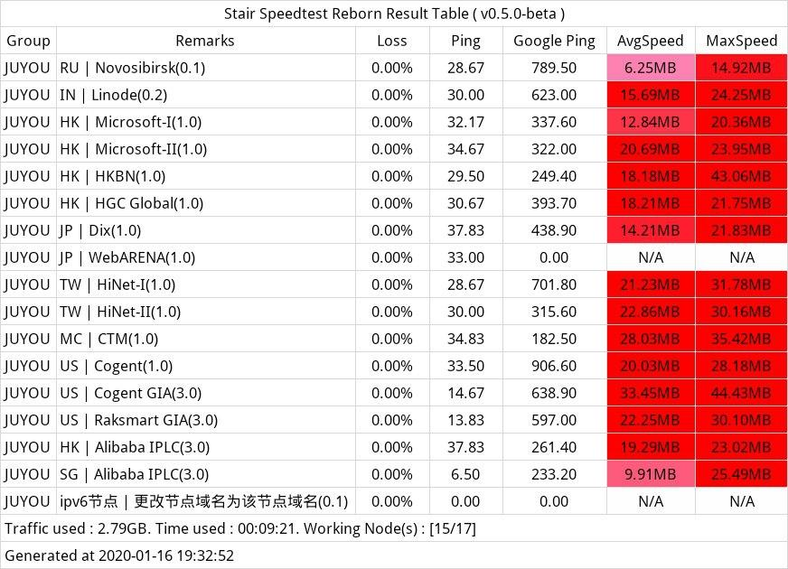
via Jiyou-Orichalcum/山铜 套餐；
2019.12.17 更新
via Jiyou-Mithril/秘银 套餐 目前我正在用（还有Moon套餐也在用，Mithril/秘银 价格有点小贵；
via Jiyou-Air A 套餐
via Jiyou-Air E 套餐
2019.11.18 更新
MOON套餐（我的最爱）；
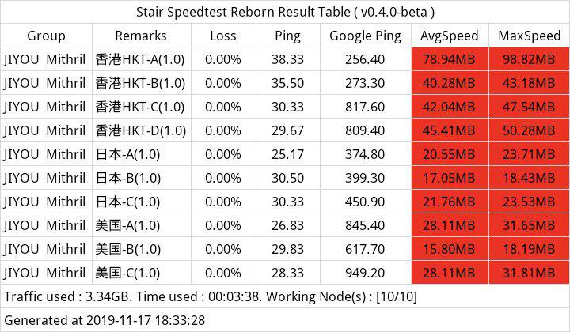
新增 Platinum（铂金）/Orichalcum（山铜）/Mithril（秘银） 套餐，5.99元/月起，速度优秀，新用户请优先选择；
2019.10.14 更新
2019.10.04 更新
via Stair Speedtest Reborn
2019.10.02 更新
via Stair Speedtest Reborn
2019.09.30 更新
via Stair Speedtest Reborn
2019.09.03 更新
官网备用域名：Jiyou.word，主域名 Jiyou.cloud，套餐新推出 Air F/E/A ¥7.99 RMB /季度（150GB/月）；套餐 PRO F ¥9.99 RMB /月付 （1TB/月）；套餐 MAX F ¥16.99 RMB /月付 （2TB/月），套餐 SAND PRO ¥120.00 RMB /年付 （600GB/月），套餐 MOON PRO ¥110.00 RMB /年付 （600GB/月）；当然，以上套餐都不限制设备数量，无限客户端同时在线；（P.S. 随着时间的变化，价格会小幅度变动；1元套餐是元老套餐，现在依旧可以续约，但新朋友应该是再也买不到了。）
v2ray配置教程
配置大同小异，不同APP/软件所支持的订阅格式均有所区别。
基础知识点
你的订阅信息
1.登陆 jiyou.cloud > 门户首页 > 用户中心 > 我的产品与服务 >产品详情 找到你的订阅信息。
2.其他机场亦如此；进入用户中心（个人中心），并找到你的订阅信息；
本教程通用性说明
*本文软体配置均为v2ray软体通用教程，如果你能在你的机场服务中心找到你的订阅信息！
| 创建时间 | 上次使用时间 | 操作 | |
|---|---|---|---|
| 2019-06-12 10:45:55 | 2019-06-22 08:58:13 | 重置UUID | 重置口令 |
| 订阅 | 操作 |
|---|---|
| All | 复制 |
| Quantumult | 复制 |
| Clash | 复制 |
极游提供三四种订阅方式，All，Quantumult及QuantumultX，Clash;
一些解释：不同的订阅方式，适用于不同的软体。All 订阅方式适用于软体， iOS平台有Shadowsocket，Windows有v2rayN，Android有v2rayNG的订阅方式，Mac有v2rayU；Quantumult订阅方式，适用于 iOS平台有 Quantumult（有且仅且支持iOS平台）。QuantumultX订阅方式，适用于 iOS平台有 QuantumultX（有且仅且支持iOS平台）Clash订阅方式适用软体，Windows平台有ClashW，Android平台平台有ClashA，Mac有ClashX。
以下将针对 All的订阅方式，对各个平台软体进行配置；All右边有复制按钮，注意使用之复制订阅信息；
各平台配置
注意：如果以下软件下载链接不可用或找不到下载资源，可参考：神一般的工具们：Surge/Quantumult/Shadowrocket /QuantumultX/Clash/v2Ray（NG）/Maying 支持协议及配置教程科普指北进行下载与安装；
Windows v2rayN 端配置
0.Microsoft .NET Framework 4.5 或许会需要安装；
2.且务必校准电脑时间（最好是自动获取时间）；
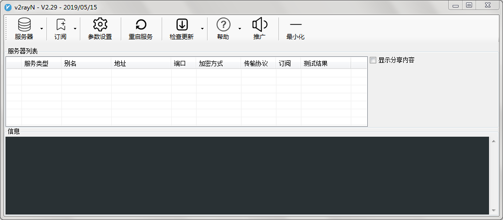
1.下载软体
2.解压V2rayN-Core.zip (如果有装杀软，可以先关掉)
3.进入 v2rayN-Core，点击 v2rayN.exe 启动
4.找到 订阅按钮，添加订阅
5.找到你的订阅信息，复制All,粘贴（看上一节：你的订阅信息）
6.备注随意填写，找到启用待选项，并启用（打勾），保存
7.找到 订阅按钮，更新订阅
8.电脑任务栏右下角，找到 v2rayN图标，选中图标，鼠标右键,启用http服务
9.打开 google.com/hk 试试
10.电脑任务栏右下角，找到 v2rayN图标，选中图标，鼠标右键,服务器，选择合适服务器
v2rayN 开机自动启动
1.电脑任务栏右下角，找到 v2rayN图标，双击进入主界面
2.找到参数设置-v2rayN设置-设置开机自动启动（可能会不成功）
Android 端 V2rayNG配置
1.下载软体
2.安装 V2rayNG.apk，打开软体
3.界面右滑或点击界面左上角的三道杠-订阅设置
4.进入订阅设置，右上角+号，备注任意填写
5.地址(url)，复制 All订阅信息到该处（看上一节：你的订阅信息）
6.右上角，点击 打勾按钮确定保存。
7.返回至主界面，右上角 +，...，点击…按钮，更新订阅
8.更新完毕后，就会看到各个节点配置信息
9.选择任意节点，点击界面右下角 V 按钮，启动
10.打开 google.com/hk 试试
11.右滑或点击左上角三道杠-设置， 路由设置,路由模式 设置是否开启全局
iOS Shadowsocket 配置
2.打开Shadowsocket，点击主界面右上角+号按钮
3.类型->Subscribe(订阅模式)
4.复制 All，填写至 URL处
5.备注可选，点击右上角完成按钮，你会进入更新状态
6.主界面，你会看到一些新东西，例如 服务器订阅，还有节点信息
7.点击选中任意节点，右上角 开关按钮，点击开启或关闭
8.打开 google.com/hk 试试
Mac v2rayU 配置

1.下载软体
2.安装 V2rayU.dmg
3.拖拽/复制 V2rayU.app 文件至 Mac 应用程序
4.打开 V2rayU.app，并给到相应授权（进入系统偏好设置-）
5.Mac 顶部，找到 V2rayU图标，点击，点击Configure
6.找到subscribe按钮，仍然是熟悉的套路
7.复制All订阅信息，并粘贴至 URL处，remark（即备注）处，随意填写
8.填写完毕后，点击add按钮，完成添加订阅的设置
9.点击update servers 按钮，更新订阅（下载节点配置信息，你会看到更新日志）
10.Mac 顶部，找到 V2rayU图标，点击，点击turn v2ray-core on
11.打开 google.com/hk 试试
V2rayU 相关注释
无。
Clash X/W/A 配置
鉴于配置简陋，博主并没有使用该软体。但还是为大家找到了软体操作界面的中文翻译，以供大家自行配置参考。（订阅信息，记得应该是复制Clash，而不是All！）
| Windows | Android | Mac OS |
|---|---|---|
| 点击下载 | 点击下载 | 点击下载 |
*ClashA 新版本教程，安卓用户可以试试（非常好用，UI设计很人性化）；
*此处，只介绍 Clash for Mac的设置，Clash for Windows 或 for Android 基本跟 v2rayNG等无太多差异。
1.下载软体
2.安装软体
3.打开ClashX，并按提示给到所有需要的授权
4.Mac 顶部，找到 ClashX图标，一只小猫咪，点击它，配置 -> 托管配置->设置地址（是不是很熟悉的套路）
5.复制 clash订阅信息，粘贴到 url处（参考上上一节：你的订阅信息）确定，如果提示成功
6.Mac 顶部，找到 ClashX图标，一只小猫咪，点击它，你的节点信息就会出现了
7.打开 google.com/hk 试试
Quantumult 配置
2.打开 Quantumult 软体（这玩意只有iOS有，正常来说界面是英文的）
3.进入软体界面，点击下方More按钮，PERSONALIZATION设置，Language设置为中文。（如果已是中文，则省略）
4.点击导航栏设置按钮，找到订阅按钮，对，又是熟悉的套路
5.进入订阅设置界面，点击右上角+号，选择服务器
6.名称随意填，链接填写Quantumult订阅信息（请查看上上一小节，你的订阅信息。）
7.右上角保存
8.找到刚刚保存的名字，左滑，选择更新，提示成功
9.退回主界面，点击底部中间图标按钮，选择节点
10.选好后，点击白色软体边缘空白处返回
11.点击主页按钮，右上角开启
12.打开 google.com/hk 试试
QuantumultX 配置
10.22.2019 更新
*极游已添加 Quantumultx 订阅支持；
1.复制QuantumultX订阅链接
2.打开QuantumultX，点击右下角的三菱按钮，找到节点模块，点击引用，粘贴转换后的QuantumultX订阅链接；
3.完事；
iOS进阶玩法
iOS 使用 Surge/Quantumult/Shadowrocket/QuantumultX 解锁 TikTok 区域限制（免拔卡）传送门
QuantumultX 进阶教程：组策略&分流规则&自定义图标的进阶玩法传送门
Telegram的代理配置
*这里只说Telegram for Windows（点击链接下载），以及Telegram for Mac OS（点击链接下载）；（安卓或苹果的软件基本附带规则）；这里假设你的电脑已经下载并安装好了Telegram，并且已经按以上操作步骤配置好了相关v2ray服务，已能访问Google。
1.双击打开Telegram
2.找到软件左上角三横杠按钮（更多）---，Setting（设置）->Advanced（高级）->Network and proxy(网络月代理)
3.点击 Connection type（连接类型），进入proxy settings(代理设置)
4.选择use custom proxy(使用自定义代理)
5.点击ADD PROXY（添加代理），进入 Edit proxy （编辑代理）界面
6.选择 socks5(socks5)
7.填写socks address（代理地址）中的Hostname（服务器地址）与Port（端口）即可
8.一般默认Hostname填写为127.0.0.1
9.Port即端口，具体是什么？请参考如下
本地 Port（端口）该如何填写
ClashX中的本地监听端口
1.Mac 顶部，找到 ClashX图标，一只小猫咪，点击它，帮助 -> 端口->sock port（如果没错的话就是7891）
v2rayU中的本地监听端口
1.Mac 顶部，找到 V2rayU图标，点击Configure，进入配置界面，找到并点击advance settings
2.其中advance项下，找到local Sock Listen Port（如果没错的话，端口应该为1080）
Windows v2rayN的本地监听端口
1.右下角，找到V2rayN图标，双击
2.进入主界面，找到参数设置按钮，双击
3.本地监听端口（如果没错的话，应该是10808）
Telegram 中文包
在Telegram软件内点击：https://t.me/setlanguage/classic-zh-cn
代理模式知识点扫盲
全局模式/全局连接
英文名称为 Global Mode，即所有服务均走代理，包括但不限于QQ，微信，需联网的应用与服务；这是非常可怕的，如无必要，切勿使用；
Pac模式/规则判断
英文名称Pac Mode，即基于规则判断是否走直连或者走代理，正常情况下都是选Pac Mode，这是一种基于人工制定规则的模式，且目前规则均已晚上，保证你打开百度时并不会使用代理。
直连模式
英文名称为Manual Mode，直连，全部直连。
代理
英文名称为Proxy，通俗来讲，他是我们访问外部网络的中继器，通过它才得以访问例如Google等网站。信息，是经过中转的，但可放心，https 的安全性很好。
代理的工作模式
你->代理服务器->谷歌服务器，任何上网设备都是有ip地址的，这个ip可能是运营商基站给你的，或者是路由器给你的，有且仅且唯一。
中间人
打开浏览器，输入地址例如Google.com，那么这时，是以该ip地址身份向谷歌发起服务请求，DNS解析地址，并指向谷歌服务器，你会发现，你是访问不了Google.com的，你的请求就像碰到了一堵墙，嘭，返回错误，或 wait 超长时间。这叫做阻断，阻止你与谷歌的服务器握手，或阻止接收谷歌返回请求结果，或使之无限超时，以至断开。
中转的一般含义
代理服务器，即没有被限制的服务器，举例说明，谷歌服务器，即被限制。我们将请求发送至 代理服务器，代理服务器转发请求至目标服务器即谷歌，谷歌返回结果至代理服务器，代理服务器将结果返回用户，即我们本地。
一些Faq 可能遇到的问题
域名污染问题导致不能更新订阅
当点 update servers可能会不出现 log 的情况，有两种原因，All订阅信息，域名被污染，第二种，网站订阅服务炸了！当然，第一种应该是极少数情况，如果不能确信可以参考如何知晓域名是否已被污染提供的方法，查询一下订阅信息All的域名；（出现很多奇怪的ip，则很大概率已经被污染了）；如若是订阅服务炸了，则需要极游自身修复；
如何知晓域名是否已被污染

via https://www.17ce.com/ 域名被污染会出现很多奇怪的解析结果；
或使用 https://www.checkgfw.com/ 进行域名被墙检测；
DNS污染导致订阅不了的解决办法
0.挂代理，参考 配置分流规则/Pac 访问任意被墙网站 ；
1.更换新的可用的域名（未被墙），你可重新获取订阅链接；
2.手动修改订阅链接的域名部分为现在极游可用的未墙域名；域名污染将导致域名解析不出来，或指向奇怪的IP，此处我们已污染域名更改为 portal.caipin.pro （因为这个域名没有被污染，至少暂时是这样）；
当然，这在大多数情况下不用修改的，如果出现 update servers 不更新的情况，请更换订阅链接的域名部分；
举例说明，更换域名
以All订阅举例说明（Quantumult、Clash同理），复制 All订阅信息，如下：域名为 sub.jiyou.cloud，大概率已被污染；更换为portal.caipin.pro或tianlinzhao.com
修改前 https://sub.jiyou.cloud/modules/servers/V2raySocks/osubscribe.php?*...
修改后 https://portal.caipin.pro/modules/servers/V2raySocks/osubscribe.php?*...
修改后 https://tianlinzhao.com/modules/servers/V2raySocks/osubscribe.php?*...
使用修改后的订阅信息即可；
订阅更新不了的其他原因 DDoS 等
除了DNS域名缓存污染之外，也可能订阅服务炸了，例如：DDoS攻击，CC，导致服务器服务不可能或出现握手失败的情况。当然，也有可能是管理员误操作（折腾坏了）。
域名被墙是很普遍的现象，不必大惊小怪。（业界共识，真Rix也不例外）
订阅更新不了的其他原因 使用代理更新
就像动漫疯一样，看视频你得是台湾运营商IP（或者使用某些DNS）；同理，如果使用了某些规则，设定境外IP不能访问资源，那同样的，你也拉取不到订阅信息。解决方法：在订阅服务本身无碍的情况下，关掉代理就可以更新订阅。
网站访问不了的原因
代码1020，说明你的IP地址不被允许访问/拉取服务器资源，关闭代理即可访问。
为什么？因为你更新订阅时其实在向服务器发起请求，跟浏览器打开网页一样，都是向服务器拉取资源。服务器判断你为规则之外的IP，就会返回相关状态错误的代码。
任何向服务器发起的请求，都会返回状态代码。例如 404 ，例如 403 ，例如 502。这些状态代码对分析网站服务器状态很用用，具体代码含义可自行搜索。
如何判断服务器是否被攻击
1.Ping 一下，订阅链接域名，例如 jiyou.cloud sub.jiyou.cloud，看看是否能Ping 通。
2.Ping 得通，则服务器可用
3.登入 jiyou.cloud 看看能否打开
4.如果以上都显示 OK
5.则订阅服务炸了
关于订阅更新的一些建议
保存可用服务节点，新建订阅组别分开更新（懂？）。以免造成更新后，（原）可用节点跟随更新消失的问题。
DNS污染的一般解决办法
1.打开 jiyou.us 或任意被被污染域名，看看能否打开？如果不能，继续往下。
2.需注意：本DNS域名解析服务器 1.1.1.1或应该 长久可用。
修改DNS服务器地址
Windows 修改DNS服务器地址
1.登入Windows，桌面右下角，找到网络连接的那个图标
2.右键打开网络和共享中心
3.查看网络活动-访问类型-internet，下方点击本地连接
4.进入本地连接状态界面-属性-网络项-双击Internet 协议版本4（ICP/IPv4）
5.自动获得DNS服务器地址-选择使用下面的DNS服务器地址
6.首选DNS服务器填写1.1.1.1，备用DNS服务器填写8.8.8.8或114.114.114.114
7.勾选 退出时验证设置-点击确定- 确定，进入Windows 网络诊断
8.（或浏览器无痕模式）进入 jiyou.us 看看（或等上几分钟）
iOS Quantumult 修改DNS服务器地址
1.进入 Quantumult 软体
2.设置-域名解析-域名解析服务器-设置为 1.1.1.1
3.保存(或需几分钟生效)
4.（浏览器无痕模式）进入 jiyou.us 或任意被污染域名看看（或等上几分钟）
其他 平台修改DNS服务器地址
适用于安卓手机，苹果手机：
1.1.1.1 App客户端 — 网际网路上速度最快、隐私权优先的DNS 解析服务
极游信息相关（需密切注意）
虽然极游称：本低价机场无SLA及速度保证，介意者勿购买；但就目前极游4k（4000+）用户来说，这服务简直不要太爽，早买早舒心。（大部分反馈数据，测速等显示服务良好，但依然不排除极少数地区，因运营商限制，导致的Qos问题）！
购买套餐
购买服务为先付款后使用，其中邮箱务必填写正确，手机号码（务必）随意填写；扫码付款后，刷新页面即可看到支付状态；以上完成，即可按本教程开始配置使用。
资讯交流
敬请悉知
以上内容仅针对极游服务适配教程，本站不提供极游相关服务售后。
在配置过程中遇到问题，可在本文评论处反馈，内容需包括问题详情，使用软件，错误代码，是否复现，是否已按步骤操作等。随意回复，不能用，用不了，将不会得到任何帮助。
其他一些FAq
暂无时间更新。
更多
Speedtest 安装以及彩蛋皮肤唤出
以上配置完成后，相信已经可以正常上网了。
Speedtest 下载
https://www.speedtest.net/apps
Speedtest，iOS端不支持国服下载，需要有外国 Apple id支持。另外，Speedtest 安卓端 也可到 Apkture 或 酷安 应用商城下载。
Speedtest 主题皮肤彩蛋
苹果用户长按开始键(对，别放)。有音效，中间黑屏也不放。
展示完毕更改Speedtest默认主题
打开Speedtest设置-主题-选ookla 即可
App代购
极游 iOS 用户如需购买Shadowrocket/Quantumult(X)等可联系iOS app代购；
其他机场推荐/SSR/SS/v2ray/游戏加速
1.卡车家族丨SSR 8元起/月，50+全球节点分布，优秀4k秒开，还有专业游戏加速（ limbopro.xyz 有专属20%优惠，简直暴风感动）
2.机场专线 这里可以查看更多机场推荐
3.limboPro TG 订阅频道 更多资讯
版权属于：毒奶
联系我们： https://limbopro.xyz/6.html
电报频道： https://t.me/limboprossr
推特账号： https://twitter.com/limboprossr
集美账号： https://www.instagram.com/limboprossr/
油管账号 ： http://bit.ly/2VJcz7o/
机场推荐： https://limbopro.xyz/865.html
上网必会： https://limbopro.xyz/archives/2910.html
广告屏蔽： https://limbopro.xyz/archives/adguard.html
实用工具： https://limbopro.xyz/category/tools/
网站优化： https://limbopro.xyz/category/Typecho/
美图欣赏： https://limbopro.xyz/category/instagram/
开车专栏： https://limbopro.xyz/category/NSFW/
返回源站： https://limbopro.github.io（每日0点更新）本文链接：https://limbopro.xyz/archives/615.html
本文采用 CC BY-NC-SA 4.0 许可协议 ，转载和引用时请注意遵守协议！